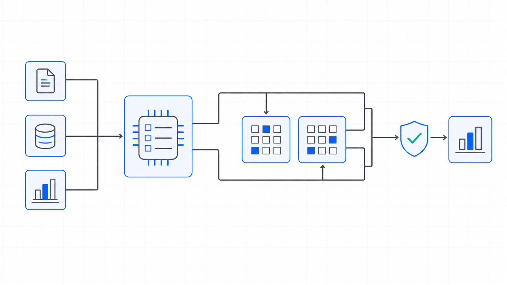

SFS-E45-PVR · PROJECT REPORTING · REV 2026-07-24 · PRODUCTION
PRODUCTION = runnable end-to-end, CI-backed, full test suite passing. All data fictional and seeded.
Project Variance & Business-Plan Compare
Does the variance column still equal the two columns beside it?
On a fixed periodic calendar every development project's proforma is re-issued as a project report, and that report has to prove itself column by column. Dedicated tabs restate six metrics -- gross revenue, net project revenue, total project expense, project profit, margin on cost and project IRR -- in three columns: what it is this period, what it was last period, and what the approved Business Plan said. A budget-variance tab breaks each cost line into Total Budget, Cost to Date and Cost to Complete. A milestone block reports each schedule date Current vs Prior vs Variance against a baseline frozen at the version the project was approved under, with + meaning ahead. This engine reads the nine artifacts that record emits -- the project register, the budget-variance tab, the current-period and prior-period economics, the Business Plan baseline, the variance summary, the milestone schedule, the slippage watchlist and the report rollup -- and runs twenty-two deterministic controls over them. Is the report complete and the period readable, are the project ids unique, is every project type known and does every project carry both comparatives, is every cost line complete, in a known category and on a declared project, is Cost to Complete the remainder of the budget, do net revenue, the expense tie to the budget, profit and margin on cost re-derive from their own inputs, do the Prior and Business Plan columns foot inside themselves, do both variance columns re-foot as the difference of the two columns beside them, is the plan column the frozen approved plan, is every milestone complete, does the prior variance carry the + = ahead sign, does the baseline variance re-foot against the frozen schedule, what has slipped past tolerance, and does the rollup foot across all projects. Every figure is compared with exact == in integer cents and integer basis points, margin truncates toward zero so a loss and a profit of the same magnitude round the same way, every milestone is measured to the reporting period the file carries rather than the system clock, and no source artifact is ever written.
A variance column is the most-read number on the page and the one nobody re-foots. It is a formula until somebody types over one cell, and from that moment it no longer equals the difference of the two columns it sits between -- and nothing about the grid looks wrong. Cost to Complete quietly stops being the remainder: it is maintained beside the budget rather than struck as Total Budget less Cost to Date, so spending climbs, the remainder does not move, and an overrun rides in a column nobody re-added. And the Business Plan column gets re-based to a revision nobody approved, which is the hardest of the three to see because it makes every plan variance smaller at once: nothing looks wrong, everything looks better. Underneath those sits a subtler failure the current-period controls would never catch -- a comparative column that does not foot inside itself. The Prior and Business Plan columns each carry their own gross revenue, deductions and expense, so each has its own net revenue, profit and margin that must re-derive from them; a variance measured against a column that never footed is measuring nothing. The engine rebuilds every derived figure -- every Cost to Complete, net revenue, profit, margin, both variance columns on all six metrics, every milestone variance in days and the whole rollup -- through the same restatement kernel that produced the data, compares with exact == in integer cents and basis points, holds the schedule sign convention in both directions, ships a planted-defect file for every registered control, and states its benchmark as a command rather than a claim.
Seven control families run in registry order over each project report. The first proves the others had something to read and that the reporting period is legible, because a control that passes on absent evidence reports assurance it never performed.
a variance a cent off its re-derivation is a break, not a rounding band
What it does for you
plain terms
On a fixed periodic calendar every development project's proforma is re-issued as a project report, and the same three failures recur in each re-issue. Dedicated tabs restate the current period against the prior period and against the approved Business Plan baseline -- gross revenue, net project revenue, total project expense, project profit, margin on cost and project IRR -- while a budget-variance tab breaks each cost line into Total Budget, Cost to Date and Cost to Complete, and a milestone block reports each schedule date Current vs Prior vs Variance against a frozen baseline, + meaning ahead. First, a variance column stops deriving: it is a formula until somebody types over one cell, and from then on it no longer equals the difference of the two columns it sits between -- and it is the single most-read number on the page. Second, Cost to Complete stops being the remainder: maintained beside the budget rather than struck as Total Budget less Cost to Date, so spending climbs, the remainder does not move, and an overrun rides in a column nobody re-added. Third, the Business Plan column is quietly re-based to a revision nobody approved, which makes every plan variance smaller at once -- nothing looks wrong, everything looks better. Beneath those sits a fourth that the current-period controls cannot see: a comparative column that does not foot inside itself, so the variance is measured against a column that never added up. None of these are judgment calls. They are equalities -- a stated figure against its re-derivation with exact == in integer cents and integer basis points, a variance cell against the difference of two cells, a Cost to Complete against a subtraction, a date variance against a day count with a declared sign, a rollup against a re-summation -- which a deterministic control settles better than a workbook re-issued by whoever prepares the pack this period.
The seeded demo runs every control over every project report7. The CLI generates twenty-four fictional project reports -- one clean baseline and one carrying each of the twenty-three planted defects -- then runs all twenty-two controls over each. The clean report returns PASS with no flags; every defect file returns REVIEW or FAIL and names the control it tripped along with the reason that control exists.
A re-based plan column is caught as an identity, not trusted as a label8. A defect file points the variance summary's plan basis at a revision nobody approved and leaves every figure on the page internally orderly. var_plan_version_frozen proves the stated basis against the version on the Business Plan baseline document and against the version each project was approved under, and reports the re-basing rather than the many smaller plan variances it produced.
A milestone behind by exactly the tolerance is at it, not past it9. The clean corpus carries a forthcoming milestone behind its frozen baseline by exactly the file's own slippage tolerance, and mst_slippage_lead_time deliberately does not flag it -- behind by exactly the tolerance is at the tolerance. One day further behind and the same milestone reaches the watchlist. A separate defect file slips a milestone past the band to prove the flag fires.
Functional block diagram
engineering · each block links to its source
Plain terms
Seeded Project Reports. fictional periodic project reports enter the control registry
Structural Precondition. is the project report complete and the period legible
Project Register. is every project uniquely identified, typed and comparable
Budget Variance Tab. is Cost to Complete the remainder of the budget
Current-Period Economics. do this period's economics re-derive from their own inputs
Comparative and Variance Columns. does every variance equal the two columns beside it
Milestone Schedule. does the schedule carry the right sign and the frozen baseline
Report Rollup. does the rollup recompute from the projects it summarises
Proforma, Plan & Schedule. the artifacts and versions every rule resolves against
Verdict and Findings. every finding, with the reason it exists, ends at a person
Engineering
Seeded Project Reports. generate_corpus writes one clean baseline plus one planted-defect file for every registered control, twenty-four files in total. Only the projects, the cost-line budgets and spend, the base revenue and expense figures, the plan baseline and the schedule dates are stated; every Cost to Complete, net revenue, profit, margin, both variance columns on all six metrics, every milestone variance in days and the whole rollup are re-derived through the same restatement kernel the engine later recomputes with, so the relationships the engine tests are the relationships that produced the data. The corpus deliberately puts a real row on each edge that matters: one milestone is behind the frozen baseline by exactly the tolerance, and two are ahead by exactly the same span in the other direction.
Structural Precondition. One control. FAILs a report missing any of the nine artifact types or carrying a duplicate of one, and FAILs an unreadable reporting period, so no downstream rule holds vacuously on absent evidence.
Project Register. Three controls: project ids are unique, every project type is one of the four the report understands, and every current-period project carries both a prior-period and a Business Plan comparative.
Budget Variance Tab. Four controls: every cost line is complete, in a known category and on a declared project, and Cost to Complete is struck as Total Budget less Cost to Date with exact == in integer cents.
Current-Period Economics. Four controls: net revenue is gross less deductions, the expense ties to the sum of the project's cost-line budgets, profit is net revenue less expense, and margin on cost is profit over expense in truncating integer basis points.
Comparative and Variance Columns. Four controls: the Prior and Business Plan columns foot inside themselves, both variance columns re-foot as current less comparison in cents and basis points alike, and the plan basis is proved against the frozen approved version.
Milestone Schedule. Four controls: every milestone is complete, the prior variance is prior less current under the + = ahead convention, the baseline variance re-foots against the frozen schedule version, and a forthcoming milestone behind the baseline past the file's own tolerance is flagged.
Report Rollup. Two controls: the project count and all four portfolio totals are re-summed across the current-period rows, and the slippage watchlist is rebuilt from the schedule and reported in both directions.
Proforma, Plan & Schedule. The project register carries each project's id, name, type, jurisdiction, plan version and baseline schedule version; the budget-variance tab carries each cost line's category, Total Budget, Cost to Date and Cost to Complete; the current-period and prior-period economics each carry the six metrics and the inputs beneath them; the Business Plan baseline carries the frozen approved figures and the version that approved them; the variance summary carries all six metrics in three columns with two variance columns and the basis it measured against; the milestone schedule carries each date Current, Prior and Baseline with both variances and the frozen schedule version; and the file itself carries the reporting period, the prior period and the slippage tolerance in days. Every budget, economics, variance, milestone and rollup control resolves against these through the shared restatement kernel.
Verdict and Findings. Findings roll up per project report: any FAIL is FAIL, FLAGs without FAILs are REVIEW, clean is PASS. The CLI exit code is the verdict, so a pipeline can gate on it. Reports carry no timestamps or absolute paths, which is what makes the committed report diffable -- a change in the diff is a change in the controls, not a change in when the report was run.
Instruction set
every public command
Command
Operation
Output
Exit
Artifacts
python run.py
regenerate the seeded fictional corpus, run all twenty-two controls, write both reports
per-report verdicts and every actionable finding, then the overall verdict
2 for the bundled corpus, which carries a planted defect for every control by design
100 percent of controls with a planted defect no control ships without a file demonstrating it firing
Control characteristics
engineering
Plain terms
The engine has no write path and therefore no autonomy to gate. It produces findings; a person decides whether a project report is re-issued, a budget is re-forecast and a pack is sent.
Demo gate. FAIL on the bundled corpus, by design -- it carries a planted defect for every registered control
Severity
Verdict
Action
No findings above PASS
PASS
carry the mechanically clean project report into the documented development review and sign-off
One or more FLAG, no FAIL
REVIEW
a human resolves each flag; a forthcoming milestone behind the frozen baseline past tolerance and a slippage watchlist that disagrees with the schedule both land here
One or more FAIL
FAIL
the figure is not carried into the committee pack until the failing control is cleared -- a variance that does not re-foot, a Cost to Complete that is not the remainder, a comparative column that does not foot inside itself, a re-based plan basis, a milestone variance with the wrong sign, or a rollup total that does not tie
Read-only: project reports are parsed and never written back, so the engine cannot introduce the break it reports.
Integer cents and integer basis points throughout, compared with exact ==; there is no tolerance band on a derived figure, and a cent off the re-derivation is reported as a break.
One restatement kernel: the controls and the generator share the arithmetic in variance_engine.variance, so a variance cannot disagree with the data that produced it.
The schedule sign convention is stated exactly once -- + is ahead, so a variance is the comparison date less the current date -- because a definition living in two places eventually disagrees with itself.
Margin on cost truncates toward zero rather than flooring, so a loss and a profit of the same magnitude round the same way; a zero or negative expense yields no margin rather than an invented denominator.
Project profit is struck on the stated net revenue, not a re-derived one, so a single break is reported once against the column that moved rather than twice.
A figure that should be integer cents but is not produces an AMOUNT_INVALID finding contained to the one row it was read on, rather than being coerced into the number the engine is meant to audit.
Every milestone and slippage test is measured to the reporting period the file carries, never to the system clock, so a run in a later period returns the same findings.
Deterministic and byte-stable: same inputs produce the same findings in the same order, with no timestamps or absolute paths in any output.
Absent evidence is never a passing control; a missing artifact fails completeness rather than letting the controls that read it pass unread.
Operating limits
what it refuses to do
The engine never posts a journal entry, re-forecasts a budget, revises a schedule or writes to a source artifact. It reads the project report and stops.14
It reads the nine artifacts the periodic project report emits. It does not connect to a general ledger, a job-cost system, a scheduling tool, or the underlying construction contracts.15
It proves the report foots to the figures underneath it, not that the proforma behind those figures is a sound proforma. Underwriting a development is a judgment no engine makes.16
It re-derives every variance against the comparatives and the plan version the file itself carries; it does not decide whether that Business Plan revision is the one that should be in force, only that the report measures against the version it declares and that every project was approved under it.17
It takes the milestone dates at face value: it confirms the variances re-derive with the declared sign against a frozen baseline, not that a date is achievable or that work actually reached a milestone. All shipped data is fictional -- the developers, projects, jurisdictions, cost lines, plan versions, revenues, expenses and milestone dates are invented, and the reporting period is set in a fictional future.18
See it run
control architecture

The Project Variance and Business-Plan Compare engine tile states the question that has to hold column by column: every derived figure recomputed from its own inputs, every variance equal to the difference of the two columns beside it, every comparative column footing inside itself, and the plan column still the plan that was approved.
One conversation: you describe the work that consumes your team's month; we tell you plainly what this engine can take over, what it can't, and what a scoped first phase would cost. Your people keep approval authority.